3월에 태어난 브랜드 121곳
3월에 태어난 브랜드 121곳을 탄생일 순으로 모았습니다. X, 페라리(FERRARI), 바비(Barbie)가 모두 3월생입니다.
2026년 3월, 주년을 맞는 브랜드
3월 탄생 달력
날짜까지 확인된 107곳을 날짜 칸에 놓았습니다.
- 1다이하쓰브리지스톤+10
- 2US 스틸델타 항공+3
- 3미국국립과학원한국석유공사+2
- 4캐드베리ING 그룹
- 5스타인웨이현대해상+2
- 6
- 7파나소닉 홀딩스한미반도체+1
- 8
- 9캐스트롤바비+3
- 10도이체 방크Progressive Corporation
- 11소더비스람보르기니+1
- 12페라리
- 13남양유업칠리스+1
- 14팬아메리칸 월드 항공중국철도총공사+1
- 15롤스로이스 리미티드쌍용그룹+6
- 16엘키오반스+4
- 17티센크루프
- 18Wernesgrüner웰스 파고+1
- 19짜파게티메첼+1
- 20네덜란드 동인도 회사하이디라오+1
- 21마끼다타코벨+3
- 22스베르방크애프터매스 엔터테인먼트
- 23
- 24메트라이프서태지컴퍼니+1
- 25HMM갈레리아 카우프호프
- 26크래프톤
- 27캐피털 레코드아큐라+1
- 28볼쇼이 극장TotalEnergies+1
- 29타이항공현대위아+3
- 30치키타 브랜즈 인터내셔널이스즈 자동차+2
- 31EMI아바르트+6
3월생 브랜드 연대순
 Wernesgrüner독일 · 식음료
Wernesgrüner독일 · 식음료- 네덜란드 동인도 회사(Dutch East India Company)리테일·커머스
 소더비스(Sotheby's)영국 · 브랜드·비즈니스
소더비스(Sotheby's)영국 · 브랜드·비즈니스- 볼볼쇼이 극장(Bolshoi Theatre)러시아 · 미디어·엔터테인먼트
 캐드베리(Cadbury)식음료
캐드베리(Cadbury)식음료- 웰스 파고(Wells Fargo)미국 · 금융
 스타인웨이(Steinway & Sons)독일 · 미디어·엔터테인먼트
스타인웨이(Steinway & Sons)독일 · 미디어·엔터테인먼트 미국국립과학원(National Academy of Sciences)미국 · 브랜드·비즈니스
미국국립과학원(National Academy of Sciences)미국 · 브랜드·비즈니스 메트라이프(MetLife)미국 · 금융
메트라이프(MetLife)미국 · 금융 도이체 방크(Deutsche Bank)독일 · 금융
도이체 방크(Deutsche Bank)독일 · 금융 캐스트롤(Castrol)영국 · 에너지·산업재
캐스트롤(Castrol)영국 · 에너지·산업재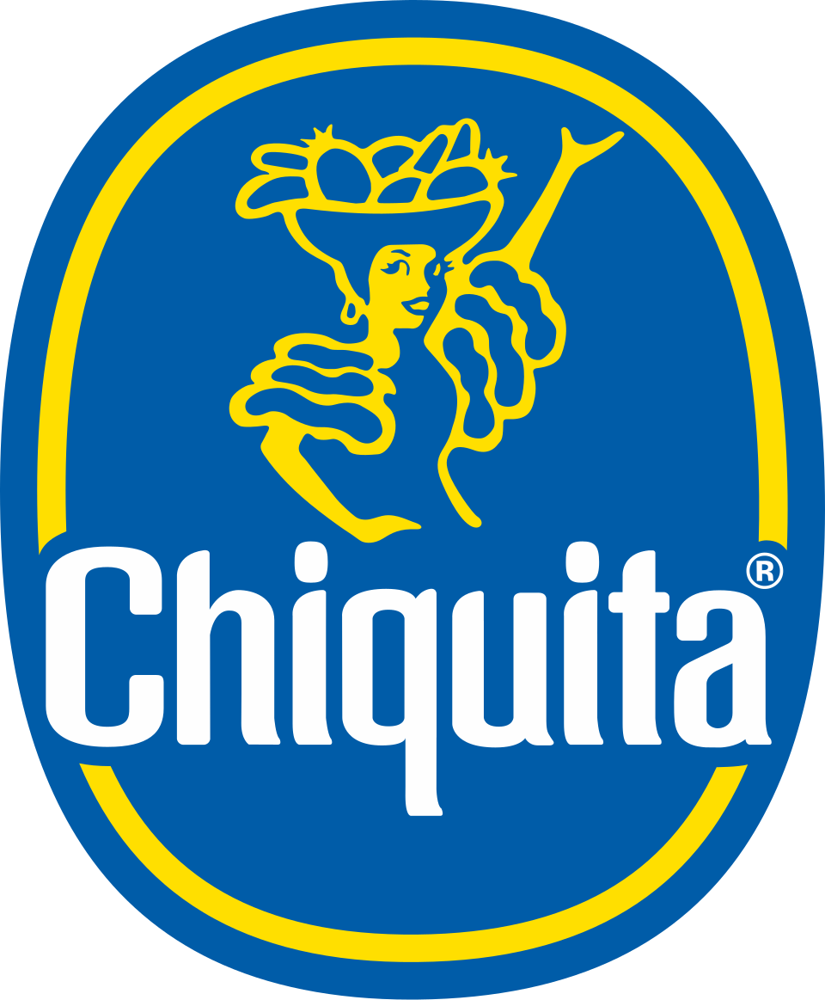
치키타 브랜즈 인터내셔널(Chiquita Brands International)미국 · 식음료- US 스틸(U.S. Steel)미국 · 에너지·산업재
 롤스로이스 리미티드(Rolls-Royce Limited)영국 · 모빌리티
롤스로이스 리미티드(Rolls-Royce Limited)영국 · 모빌리티 다이하쓰(Daihatsu)일본 · 모빌리티
다이하쓰(Daihatsu)일본 · 모빌리티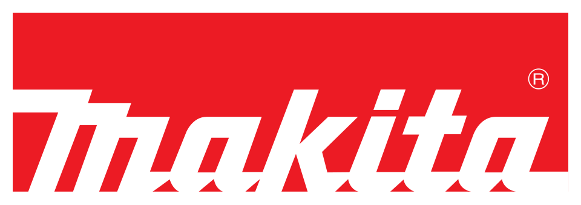
마끼다(Makita)일본 · 에너지·산업재 파나소닉 홀딩스(Panasonic Holdings Corporation)일본 · 기술·전자
파나소닉 홀딩스(Panasonic Holdings Corporation)일본 · 기술·전자 TotalEnergies프랑스 · 에너지·산업재
TotalEnergies프랑스 · 에너지·산업재 델타 항공(Delta Air Lines)미국 · 모빌리티
델타 항공(Delta Air Lines)미국 · 모빌리티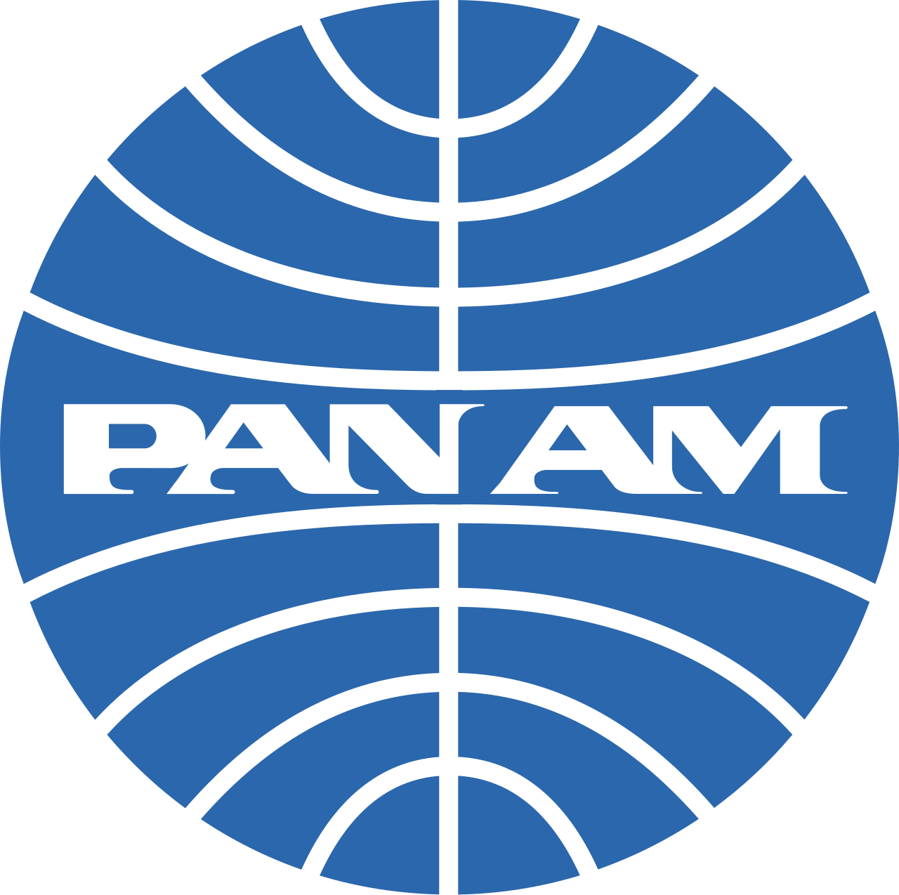
팬아메리칸 월드 항공(Pan Am)미국 · 기술·전자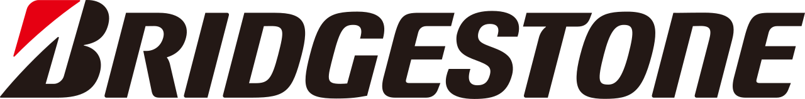
브리지스톤(Bridgestone)일본 · 모빌리티 EMI영국 · 미디어·엔터테인먼트
EMI영국 · 미디어·엔터테인먼트 이스즈 자동차(Isuzu)일본 · 모빌리티
이스즈 자동차(Isuzu)일본 · 모빌리티 Progressive Corporation미국 · 금융
Progressive Corporation미국 · 금융 삼성그룹(Samsung Group)한국 · 기술·전자
삼성그룹(Samsung Group)한국 · 기술·전자- 쌍용그룹(SsangYong Group)한국 · 브랜드·비즈니스
 한국마사회(Korea Racing Authority)한국 · 스포츠·아웃도어
한국마사회(Korea Racing Authority)한국 · 스포츠·아웃도어 캐피털 레코드(Capitol Records)미국 · 미디어·엔터테인먼트
캐피털 레코드(Capitol Records)미국 · 미디어·엔터테인먼트 페라리(FERRARI)이탈리아 · 모빌리티
페라리(FERRARI)이탈리아 · 모빌리티 람보르기니(Lamborghini)이탈리아 · 모빌리티
람보르기니(Lamborghini)이탈리아 · 모빌리티 아바르트(Abarth)이탈리아 · 모빌리티
아바르트(Abarth)이탈리아 · 모빌리티 GMA 네트워크(GMA Network, Inc.)필리핀 · 미디어·엔터테인먼트
GMA 네트워크(GMA Network, Inc.)필리핀 · 미디어·엔터테인먼트 현대해상(Hyundai Marine & Fire Insurance)한국 · 브랜드·비즈니스
현대해상(Hyundai Marine & Fire Insurance)한국 · 브랜드·비즈니스 바비(Barbie)미국 · 홈·라이프스타일
바비(Barbie)미국 · 홈·라이프스타일 타이항공(Thai Airways)태국 · 여행·호스피탈리티
타이항공(Thai Airways)태국 · 여행·호스피탈리티 엘키오(Elkjøp)노르웨이 · 리테일·커머스
엘키오(Elkjøp)노르웨이 · 리테일·커머스 타코벨(Taco Bell)미국 · 식음료
타코벨(Taco Bell)미국 · 식음료 남양유업(Namyang Dairy)한국 · 식음료
남양유업(Namyang Dairy)한국 · 식음료 반스(Vans)스포츠·아웃도어
반스(Vans)스포츠·아웃도어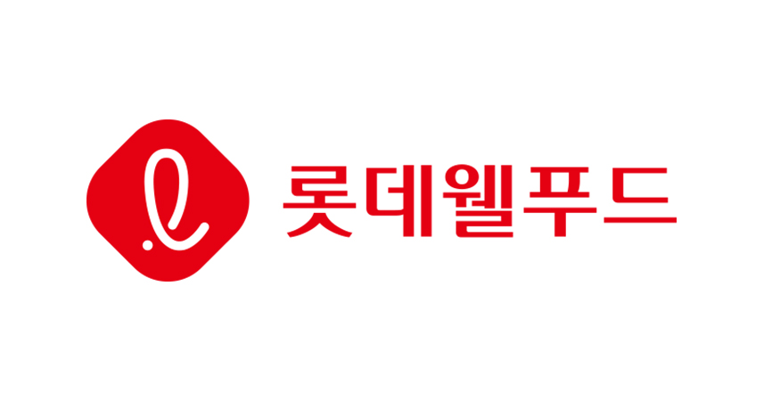
롯데웰푸드(Lotte Wellfood)한국 · 식음료 사우스웨스트 항공(Southwest Airlines)미국 · 모빌리티
사우스웨스트 항공(Southwest Airlines)미국 · 모빌리티 제만(Zeeman)네덜란드 · 리테일·커머스
제만(Zeeman)네덜란드 · 리테일·커머스 대한항공(Korean Air)한국 · 여행·호스피탈리티
대한항공(Korean Air)한국 · 여행·호스피탈리티 코나미(Konami)일본 · 미디어·엔터테인먼트
코나미(Konami)일본 · 미디어·엔터테인먼트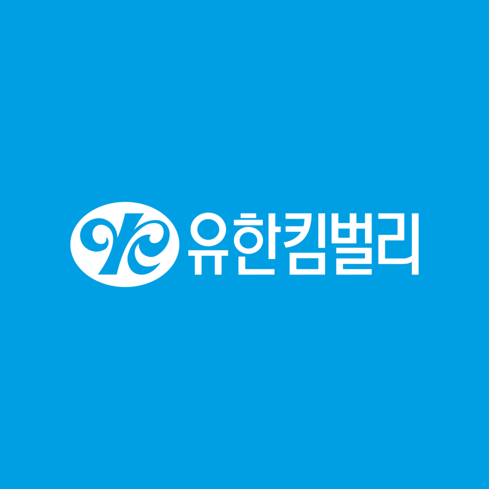
유한킴벌리(Yuhan-Kimberly)홈·라이프스타일 사조(Sajo)한국 · 식음료
사조(Sajo)한국 · 식음료 Campaign for Real Ale영국 · 식음료
Campaign for Real Ale영국 · 식음료 스타벅스(Starbucks)식음료
스타벅스(Starbucks)식음료 영국항공(British Airways)영국 · 여행·호스피탈리티
영국항공(British Airways)영국 · 여행·호스피탈리티 칠리스(Chili's)미국 · 식음료
칠리스(Chili's)미국 · 식음료 더바디샵(The Body Shop)뷰티·퍼스널케어
더바디샵(The Body Shop)뷰티·퍼스널케어 HMM한국 · 모빌리티
HMM한국 · 모빌리티 현대위아(Hyundai WIA)한국 · 모빌리티
현대위아(Hyundai WIA)한국 · 모빌리티 호텔신라(Shilla Hotel)한국 · 여행·호스피탈리티
호텔신라(Shilla Hotel)한국 · 여행·호스피탈리티- 동아오츠카(Dong-A Otsuka)한국 · 식음료
- 한한국석유공사(Korea National Oil Corporation)한국 · 에너지·산업재
 한미반도체(Hanmi Semiconductor)한국 · 기술·전자
한미반도체(Hanmi Semiconductor)한국 · 기술·전자 한솔케미칼(Hansol Chemical)한국 · 브랜드·비즈니스
한솔케미칼(Hansol Chemical)한국 · 브랜드·비즈니스 젠 디지털(Gen Digital)미국 · 기술·전자
젠 디지털(Gen Digital)미국 · 기술·전자 한국씨티은행(Citibank Korea)한국 · 금융
한국씨티은행(Citibank Korea)한국 · 금융 Actavis아일랜드 · 헬스·제약
Actavis아일랜드 · 헬스·제약 리서치 인 모션(BlackBerry)캐나다 · 기술·전자
리서치 인 모션(BlackBerry)캐나다 · 기술·전자- 짜짜파게티(Chapagetti)한국 · 식음료
- SK텔레콤(SK Telecom)한국 · 기술·전자
 한온시스템(Hanon Systems)한국 · 모빌리티
한온시스템(Hanon Systems)한국 · 모빌리티 아큐라(Acura)일본 · 모빌리티
아큐라(Acura)일본 · 모빌리티 유비소프트(Ubisoft)프랑스 · 미디어·엔터테인먼트
유비소프트(Ubisoft)프랑스 · 미디어·엔터테인먼트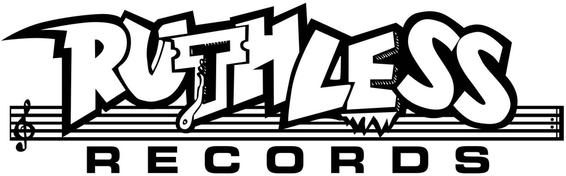
루슬러스 레코드(Ruthless Records)미디어·엔터테인먼트 블랙록(BlackRock)미국 · 금융
블랙록(BlackRock)미국 · 금융 램버스(Rambus)미국 · 기술·전자
램버스(Rambus)미국 · 기술·전자 잠바주스(Jamba)미국 · 식음료
잠바주스(Jamba)미국 · 식음료 ING 그룹(ING Group)네덜란드 · 금융
ING 그룹(ING Group)네덜란드 · 금융- 스베르방크(Sberbank)러시아 · 금융
 Švyturys식음료
Švyturys식음료 레드햇(Red Hat)미국 · 기술·전자
레드햇(Red Hat)미국 · 기술·전자 서울특별시 도시철도공사(Seoul Metropolitan Rapid Transit Corporation)한국 · 모빌리티
서울특별시 도시철도공사(Seoul Metropolitan Rapid Transit Corporation)한국 · 모빌리티 하이디라오(Haidilao)중국 · 식음료
하이디라오(Haidilao)중국 · 식음료 VR 그룹(VR Group)핀란드 · 모빌리티
VR 그룹(VR Group)핀란드 · 모빌리티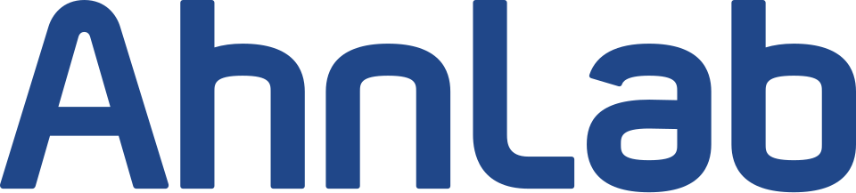
안랩(AhnLab Inc)한국 · 기술·전자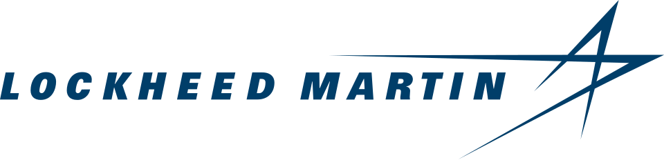
록히드 마틴(Lockheed Martin)미국 · 에너지·산업재 애프터매스 엔터테인먼트(Aftermath Entertainment)미국 · 미디어·엔터테인먼트
애프터매스 엔터테인먼트(Aftermath Entertainment)미국 · 미디어·엔터테인먼트 모질라(Mozilla)기술·전자
모질라(Mozilla)기술·전자 레킷벤키저(Reckitt)영국 · 헬스·제약
레킷벤키저(Reckitt)영국 · 헬스·제약 티센크루프(thyssenkrupp AG)독일 · 에너지·산업재
티센크루프(thyssenkrupp AG)독일 · 에너지·산업재- 넷마블(Netmarble)한국 · 미디어·엔터테인먼트
 서태지컴퍼니(Seo Taiji Company)한국 · 미디어·엔터테인먼트
서태지컴퍼니(Seo Taiji Company)한국 · 미디어·엔터테인먼트 last.fm영국 · 미디어·엔터테인먼트
last.fm영국 · 미디어·엔터테인먼트 스위스 국제항공(Swiss International Air Lines)스위스 · 모빌리티
스위스 국제항공(Swiss International Air Lines)스위스 · 모빌리티 메첼(Mechel)러시아 · 에너지·산업재
메첼(Mechel)러시아 · 에너지·산업재 캐노니컬(Canonical Ltd.)영국 · 기술·전자
캐노니컬(Canonical Ltd.)영국 · 기술·전자 디지털 리얼티(Digital Realty Trust)미국 · 금융
디지털 리얼티(Digital Realty Trust)미국 · 금융- GGOOD 뮤직(GOOD Music)미국 · 미디어·엔터테인먼트
 워크데이(Workday, Inc.)미국 · 기술·전자
워크데이(Workday, Inc.)미국 · 기술·전자 팰러앨토 네트웍스(Palo Alto Networks)미국 · 기술·전자
팰러앨토 네트웍스(Palo Alto Networks)미국 · 기술·전자 데일리모션(Dailymotion)프랑스 · 미디어·엔터테인먼트
데일리모션(Dailymotion)프랑스 · 미디어·엔터테인먼트 시어스 홀딩스(Sears Holdings Corporation)미국 · 리테일·커머스
시어스 홀딩스(Sears Holdings Corporation)미국 · 리테일·커머스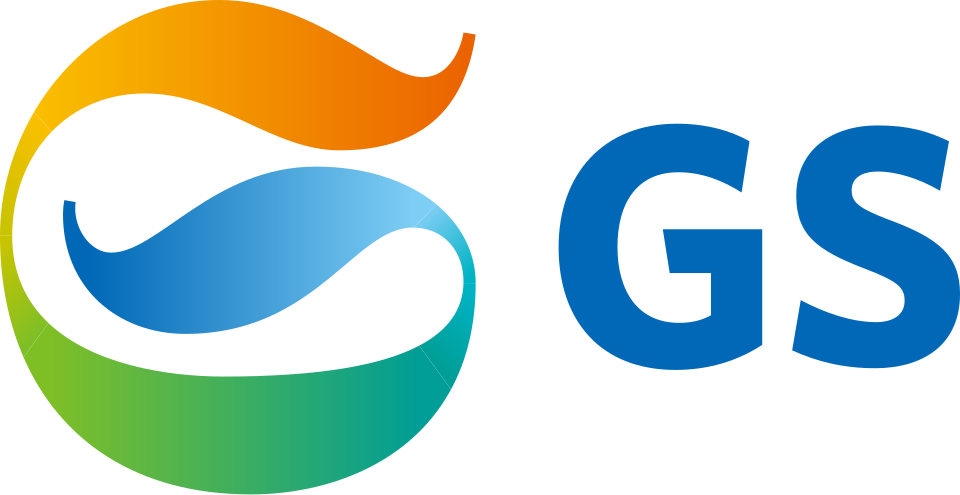
GS그룹(GS Group)한국 · 브랜드·비즈니스 X미국 · 미디어·엔터테인먼트
X미국 · 미디어·엔터테인먼트 바디프랜드(Bodyfriend)브랜드·비즈니스
바디프랜드(Bodyfriend)브랜드·비즈니스 크래프톤(Krafton)한국 · 미디어·엔터테인먼트
크래프톤(Krafton)한국 · 미디어·엔터테인먼트- 우버(Uber)미국 · 모빌리티
 팀호완(Tim Ho Wan)홍콩 · 식음료
팀호완(Tim Ho Wan)홍콩 · 식음료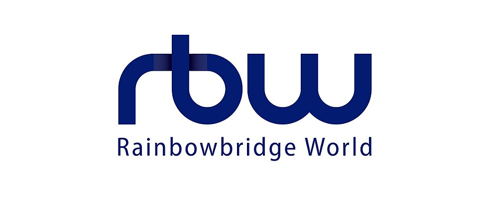
Rainbow Bridge World한국 · 미디어·엔터테인먼트 카카오톡(KakaoTalk)기술·전자
카카오톡(KakaoTalk)기술·전자- 메이퇀(Meituan)중국 · 리테일·커머스
 BNK금융그룹(BNK Financial Group)한국 · 금융
BNK금융그룹(BNK Financial Group)한국 · 금융 JTBC미디어·엔터테인먼트
JTBC미디어·엔터테인먼트 욜라(Jolla)핀란드 · 기술·전자
욜라(Jolla)핀란드 · 기술·전자 Huntington Ingalls Industries미국 · 에너지·산업재
Huntington Ingalls Industries미국 · 에너지·산업재 NH농협은행(Nonghyup Bank)한국 · 금융
NH농협은행(Nonghyup Bank)한국 · 금융- 래래코드패션·럭셔리
 NH농협금융지주(NH Nonghyup Financial Group)금융
NH농협금융지주(NH Nonghyup Financial Group)금융 마녀공장(Manyo Factory)한국 · 뷰티·퍼스널케어
마녀공장(Manyo Factory)한국 · 뷰티·퍼스널케어 동아에스티(Dong-A ST)헬스·제약
동아에스티(Dong-A ST)헬스·제약 캠프모바일(Camp Mobile)한국 · 기술·전자
캠프모바일(Camp Mobile)한국 · 기술·전자 중국철도총공사(China State Railway Group)모빌리티
중국철도총공사(China State Railway Group)모빌리티- Corteva미국 · 에너지·산업재
 폭스 코퍼레이션(Fox Corporation)미국 · 미디어·엔터테인먼트
폭스 코퍼레이션(Fox Corporation)미국 · 미디어·엔터테인먼트 갈레리아 카우프호프(Galeria Kaufhof)독일 · 리테일·커머스
갈레리아 카우프호프(Galeria Kaufhof)독일 · 리테일·커머스 SpaceXAI미국 · AI·인공지능
SpaceXAI미국 · AI·인공지능 클로드(Claude)미국 · AI·인공지능
클로드(Claude)미국 · AI·인공지능
3월에 태어난 것으로 확인된 브랜드는 121곳입니다. 가장 오래된 곳은 1436년의 Wernesgrüner, 가장 최근은 2023년의 클로드(Claude)입니다. 2026년 3월에는 Wernesgrüner(590주년), 볼쇼이 극장(Bolshoi Theatre)(250주년), US 스틸(U.S. Steel)(125주년) 등 14곳이 주년을 맞습니다. 생일이 같은 브랜드도 있습니다. 3월 1일에는 다이하쓰(Daihatsu)(1907)와 브리지스톤(Bridgestone)(1931)와 삼성그룹(Samsung Group)(1938), 3월 15일에는 롤스로이스 리미티드(Rolls-Royce Limited)(1906)와 쌍용그룹(SsangYong Group)(1939)와 서울특별시 도시철도공사(Seoul Metropolitan Rapid Transit Corporation)(1994)가 태어났습니다. 설립연도가 확인된 브랜드는 116개이며 가장 오래된 곳은 1824년, 가장 최근은 2023년에 시작했습니다. 시기별로는 1900년 이전 8개, 1900~1949년 19개, 1950~1999년 52개, 2000년 이후 37개입니다. 수록 자료로는 로고 이미지 116개, 로고 변천 자료 9개, 연혁 타임라인 13개를 갖췄습니다. 이 가운데 102개는 공식 웹사이트가 일치하는 위키데이터 개체로 연결해 두었습니다. 날짜는 위키데이터, 위키백과 정보상자, 브랜드 본문 가운데 같은 연월로 확인되는 값만 썼고, 출처끼리 다르면 싣지 않았습니다.